와인(음료)쇼케이스
업소용음료수냉장고 배송 전에 들어갈 길부터 확인하세요
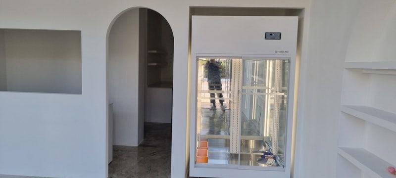
업소용음료수냉장고 배송 전에는 냉장고가 지나갈 출입문과 복도 폭, 계단·엘리베이터 크기, 차량을 댈 자리부터 재 두셔야 합니다. 설치 자리의 콘센트와 수평, 뒷면 공간까지 준비해 두면 배송 당일 바로 설치하고 온도 설정까지 마칠 수 있습니다.
안녕하세요. 음료 쇼케이스를 제작하고 전문 설치팀이 직접 배송과 설치를 맡는 한성쇼케이스입니다.
냉장고를 주문하고 나면 배송 날만 기다리게 되시죠. 그런데 막상 당일에 "문이 안 들어가요", "계단 꺾이는 곳에서 걸려요" 하는 상황이 생기면 오픈 일정까지 흔들립니다.
음료수 냉장고는 키가 크고 유리문이 달려 있어 생각보다 반입이 까다로운 장비입니다.
특히 건물 2층 이상 매장, 지하 매장, 오래된 상가처럼 통로가 좁은 곳은 배송 전에 확인할 것이 많습니다.
미리 알면 제작 단계에서 해결할 수 있는 문제도, 당일에 알면 되돌릴 수 없는 경우가 있습니다.
오늘은 업소용음료수냉장고 배송 전에 확인할 것과, 설치가 끝난 뒤 사장님이 직접 점검하실 것을 정리해 드리겠습니다.
1. 들어갈 길을 먼저 재 보세요
건물 입구, 매장 출입문, 복도, 주방 문까지 냉장고가 지나갈 모든 문의 폭과 높이를 재 두세요. 냉장고는 눕혀서 옮기기보다 세운 채로 옮기는 게 좋아 높이도 중요합니다.
문틀이나 손잡이가 튀어나와 실제 폭이 줄어드는 경우도 많으니 가장 좁은 곳을 기준으로 재야 합니다.
계단이 있다면 꺾이는 구간의 폭과 천장 높이를, 엘리베이터라면 문 폭과 안쪽 깊이를 확인하세요. 측정값을 주문 단계에서 알려 주시면 크기를 조정하거나 분리 반입이 가능하도록 제작하는 방법을 함께 찾을 수 있습니다.
- 지나갈 문 중 가장 좁은 곳의 폭과 높이를 재세요.
- 계단 꺾임 구간과 엘리베이터 크기를 확인하세요.
2. 차량과 시간 조율
배송 차량을 매장 가까이 댈 수 있는지, 상가 관리 규정상 반입 가능한 시간이 정해져 있는지 미리 확인해 주세요.
주차가 어려운 도로변이나 보행자 전용 구역이라면 짧은 시간 안에 내려야 해서 사전 조율이 필요합니다.
인테리어 공사가 아직 진행 중이라면 바닥 마감과 전기 공사가 끝난 뒤로 날짜를 잡는 게 좋습니다. 먼지가 날리는 현장에 냉장고를 먼저 들이면 응축기에 먼지가 쌓여 처음부터 냉각 효율이 떨어질 수 있습니다.
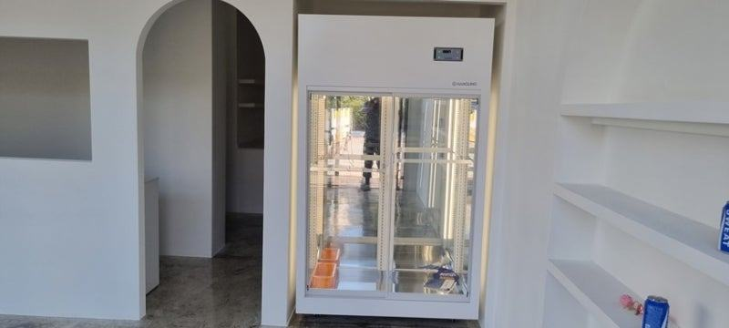
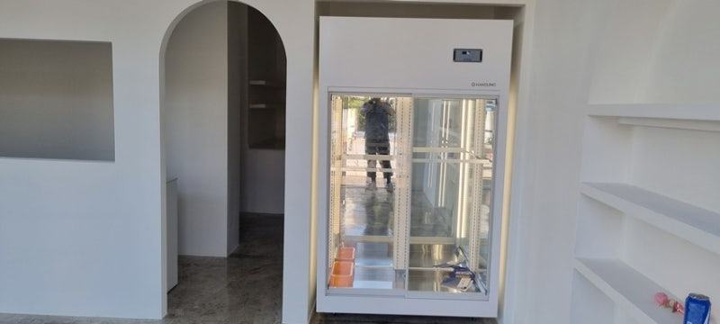
3. 설치 자리 준비
냉장고 전용으로 쓸 콘센트가 가까이 있는지 확인하세요. 멀티탭에 다른 장비와 함께 물리면 전원이 불안정해질 수 있습니다.
바닥이 기울어 있으면 문이 저절로 열리거나 제대로 닫히지 않으니 수평도 미리 봐 두세요.
뒷면과 옆면에는 열이 빠질 공간이 있어야 합니다. 벽에 딱 맞춰 넣을 생각이시라면 주문 단계에서 말씀해 주셔야 그 여유를 감안한 크기로 제작할 수 있습니다.
- 전용 콘센트 위치를 확인하세요.
- 바닥 수평과 뒷면 공간을 확인하세요.
4. 설치 후 확인할 것
설치가 끝나면 문이 부드럽게 열리고 끝까지 닫히는지, 유리와 프레임에 긁힌 곳이 없는지 함께 확인해 주세요.
조명이 모든 칸에서 켜지는지도 봐 두셔야 합니다.
전원을 켠 뒤 바로 음료를 가득 채우기보다, 내부 온도가 충분히 내려간 다음에 채우는 것이 좋습니다.
설치팀이 맞춰 둔 설정 온도와 조작 방법을 그 자리에서 듣고 메모해 두시면 나중에 직원이 바꿔도 되돌리기 쉽습니다.
체크리스트
- 가장 좁은 문의 폭과 높이
- 계단·엘리베이터 크기
- 차량 정차 위치와 반입 가능 시간
- 인테리어 공사 완료 여부
- 전용 콘센트와 바닥 수평
- 설치 후 문·조명·온도 확인
전문 설치팀이 배송부터 온도 설정까지 마친 유리냉장고 사례
인테리어에 어울리는 디자인을 원하신 매장에 경력 많은 디자이너가 직접 상담하고 설계한 유리냉장고를 1:1 맞춤으로 제작했습니다.
유리로 만드는 쇼케이스는 안팎 온도 차로 성에가 생기거나 적정 온도 유지가 어려울 수 있어, 업종에 맞는 온도 유지까지 함께 고려했습니다.
배송과 설치는 전문 설치팀이 맡아, 설치를 마친 뒤 적정 온도를 맞춰 드리고 사용 방법까지 자세히 안내했습니다.
이 사례의 제품은 1년 무상 A/S가 적용되며, 전국 A/S 체계로 서울이 아닌 지역에서도 고장 시 대응받으실 수 있습니다.
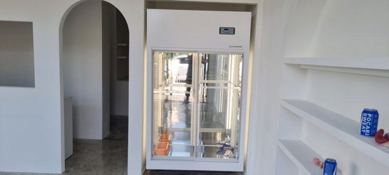
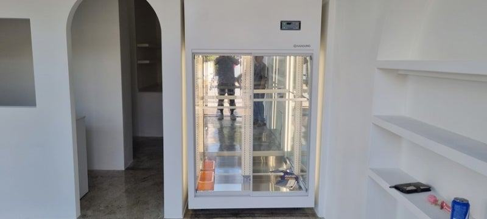
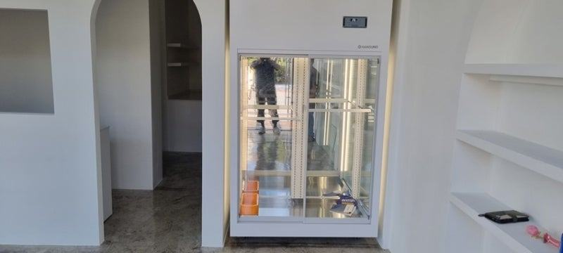
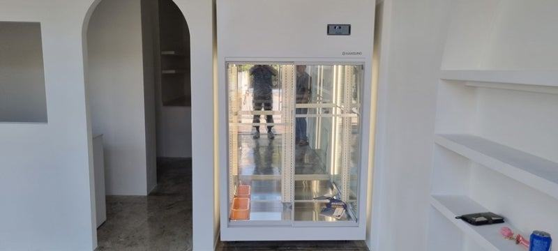
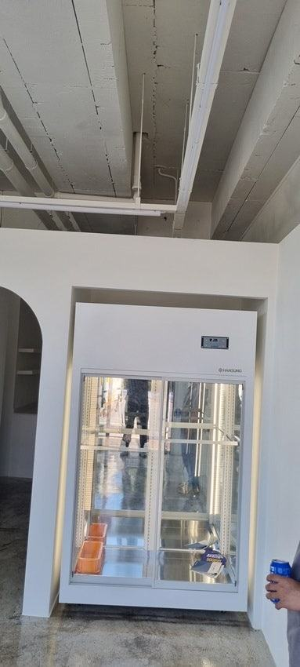
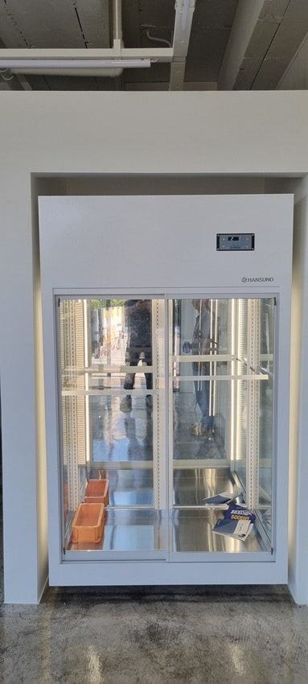


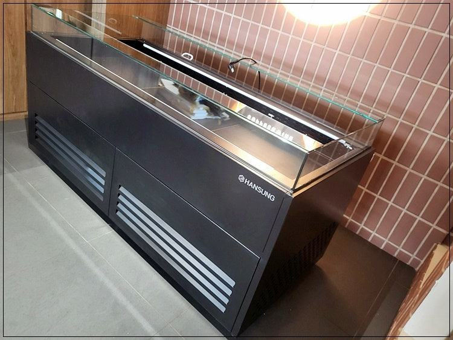
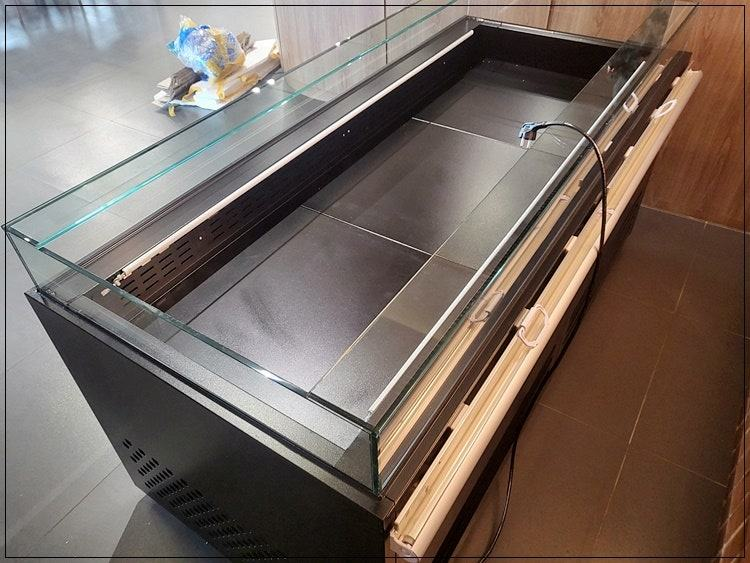
자주 묻는 질문
배송 당일 문이 안 들어가면 어떻게 하나요?
문을 떼어 내는 등 현장에서 가능한 방법을 먼저 찾지만, 안 되는 경우 일정을 다시 잡아야 할 수 있습니다.
그래서 주문 때 가장 좁은 통로 치수를 꼭 알려 주시길 부탁드립니다.
지방 매장도 직접 배송·설치가 되나요?
가능합니다. 지역과 일정에 따라 배송 날짜를 조율하며, 설치 후 A/S는 전국 240여 개 A/S 센터를 통해 받으실 수 있습니다.
설치 후 바로 음료를 넣어도 되나요?
내부 온도가 충분히 내려간 다음 채우시는 게 좋습니다. 상온 음료를 한꺼번에 넣으면 온도가 잡히는 데 오래 걸리니 나눠서 채워 주세요.
매장 조건에 맞춰 만드는 한성쇼케이스
원하시는 제품 사진과 설치할 공간 사진만 보내 주셔도 매장에 맞는 구성을 추천해 드립니다.
- 전국 240여 개 A/S 전담 센터 운영
- 본사 대량 자재 매입으로 품질 대비 합리적인 가격
- 유럽제·삼성 냉각 콤프레셔 적용
- 국내 최초 쇼케이스 전문 디자이너 상주
매장 폭과 원하는 진열 구성을 알려 주세요. 실측과 견적을 안내해 드립니다.
031-986-2458